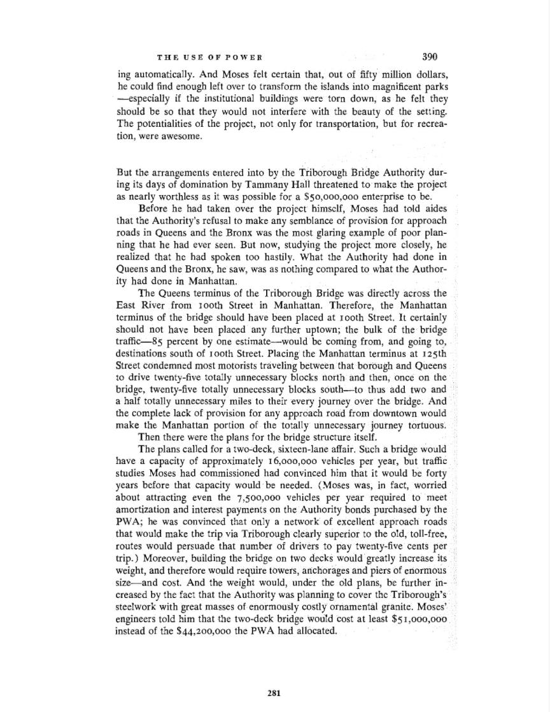

THEUSEOFPOWER390ing automatically.AndMosesfelt certainthat,outof fiftymilliondollars,he couldfind enoughleft over totransformthe islandsinto magnificentparks~especiallyif theinstitutionalbuildingsweretorndown,as he felt theyshouldbe sothattheywouldnotinterferewith thebeautyof thesetting.Thepotentialitiesof theproject,not onlyfor transportation,butfor recrea-tion,wereawesome.Butthearrangementsenteredinto by theTriboroughBridgeAuthoritydur-ing itsdaysof dominationbyTammanyHallthreatenedtomaketheprojectas nearlyworthlessas it waspossiblefor a$50,000,000enterpriseto be.Beforehehadtakenovertheprojecthimself,Moseshadtoldaidesthatthe Authority'srefusaltomakeany semblanceof provisionforapproachroadsin QueensandtheBronxwas themostglaringexampleofpoorplan-ningthathehadever seen.Butnow,studyingtheprojectmoreclosely,herealizedthathehadspokentoo hastily.WhattheAuthorityhaddoneinQueensandthe Bronx,he saw, was asnothingcomparedto whattheAuthor-ityhaddoneinManhattan.TheQueensterminusof theTriboroughBridgewas directlyacrosstheEastRiverfromtoothStreetinManhattan.Therefore,theManhattanterminusof thebridgeshouldhavebeenplacedat roothStreet.Itcertainlyshouldnothavebeenplacedany furtheruptown;thebulkofthebridgetraffic-c-Sypercentby oneestimate-wouldbe comingfrom,andgoingto,destinationssouthof roothStreet.PlacingtheManhattanterminusatI25thStreetcondemnedmostmotoriststravelingbetweenthatboroughandQueensto drivetwenty-fivetotallyunnecessaryblocksnorthandthen,onceonthebridge,twenty-fivetotallyunnecessaryblockssouth-tothusaddtwo anda half totallyunnecessarymiles totheireveryjourneyoverthe bridge.Andthe completelackof provisionfor anyapproachroadfromdowntownwouldmaketheManhattanportionof thetotallyunnecessaryjourneytortuous.Thentherewerethe plansfor thebridgestructureitself.Theplanscalledfor atwo-deck,sixteen-laneaffair.Sucha bridgewouldhavea capacityof approximately16,000,000vehiclesperyear,buttrafficstudiesMoseshadcommissionedhadconvincedhimthatit wouldbe fortyyearsbeforethatcapacitywouldbe needed.(Moseswas, in fact,worriedaboutattractingeven the7,500,000vehiclesperyearrequiredtomeetamortizationandinterestpaymentson theAuthoritybondspurchasedbythePWA; he wasconvincedthatonlyanetworkof excellentapproachroadsthatwouldmakethe trip viaTriboroughclearlysuperiortotheold, toll-free,routeswouldpersuadethatnumberof driverstopaytwenty-fivecentspertrip.)Moreover,buildingthe bridgeon twodeckswouldgreatlyincreaseitsweight,andthereforewouldrequiretowers,anchoragesandpiersofenormoussize-andcost.Andthe weightwould,underthe oldplans,befurtherin-creasedby the factthattheAuthoritywas planningto covertheTriborough'ssteelworkwith greatmassesof enormouslycostlyornamentalgranite.Moses'engineerstoldhimthatthetwo-deckbridgewouldcostatleast$5I,000,000insteadof the$44,200,000thePWAhadallocated.281
